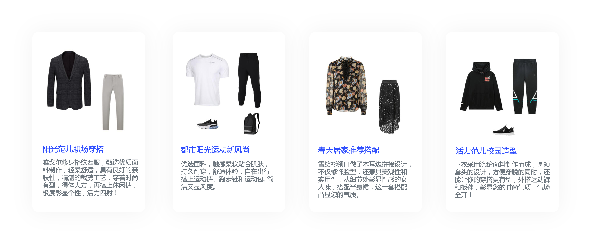
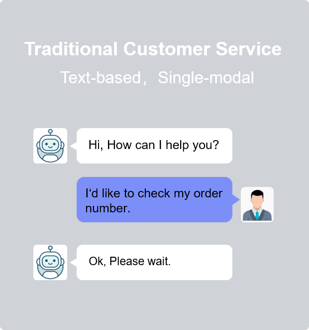

Transforming Online Shopping Experience with Multimedia Computing
references on how our multimedia technique innovates the online shopping experiences
Find visually-similar products by simply snapping a photo. Our fine-grained image recognition technique distinguishes subtle differences for billions of products.
Shop sets of products that are compatible to each other. Inter-products compatibilities are explored for one-stop shopping experience.
Consult a digital human with fresh experience of customer services. Compared to text-based service, digital human gives lifelike interaction with joint visual and audio modalities.
1. Product Search by Image
SnapShop, our featured product search service, quickly finds similar items by snapping a photo using a mobile phone. Billion-scale products can be identified by fine-grained recognition at SKU (Stock Keeping Unit) level.
Product AI looks into each item to bring full contexts to products surfing.

2. Product Collocation
Besides independent product search, Product Collocation delves into the measure of compatibility for a set of products, to compose a good outfit. More notably, we further automatically interpret the outfit selling points in a nature-language utterance as the advertising copy.
More examples on Product Collocation sampled from online service.
3. Shopping with Digital Human
We explore the visual content generation to enhance the shopping experience via lifelike interactions with digital human. Compared with traitional text-based interaction, this innovative technique enables a natural way delivering information through visual engagement using facial expression, body gestures and speech audio.
Next-generation shopping experience by face-to-face consulting a digital human for customer service.
Demo: a short conversation between digital humans
4. More references
Paper awards


Challenge awards